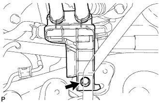
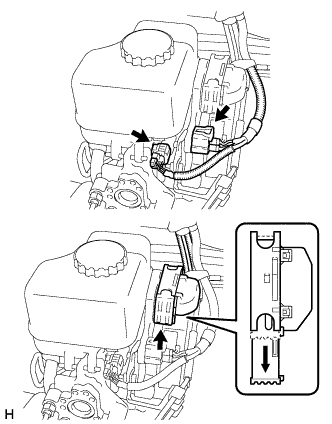
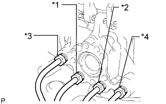
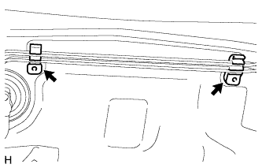
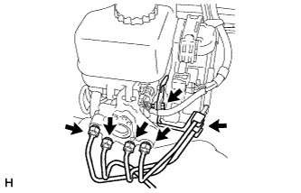
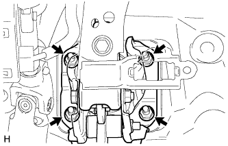

ГИДРАВЛИЧЕСКИЙ УСИЛИТЕЛЬ ТОРМОЗНОЙ СИСТЕМЫ (для моделей с правосторонним рулевым управлением) > СНЯТИЕ |
| 1. ОТСОЕДИНИТЕ ПРОВОД ОТ ОТРИЦАТЕЛЬНОГО ВЫВОДА АККУМУЛЯТОРНОЙ БАТАРЕИ |
| 2. СЛЕЙТЕ ТОРМОЗНУЮ ЖИДКОСТЬ |
| 3. СНИМИТЕ ПОДУШКУ БЕЗОПАСНОСТИ № 1 ДЛЯ ЗАЩИТЫ НОГ В СБОРЕ |
Снимите подушку безопасности № 1 для защиты ног в сборе (Нажмите здесь).
| 4. СНИМИТЕ ШТИФТ ШТОКА |
Снимите фиксатор и штифт штока с рычага педали тормоза.
| 5. СНИМИТЕ ГЛАВНЫЙ ЦИЛИНДР СЦЕПЛЕНИЯ В СБОРЕ |
Снимите главный цилиндр сцепления в сборе (Нажмите здесь).
| 6. ОТСОЕДИНИТЕ СОЕДИНИТЕЛЬ ШЛАНГА ОХЛАДАЮЩЕЙ ЖИДКОСТИ |
|  |
Для моделей с задним подогревателем:
Отсоедините соединитель шланга охлаждающей жидкости.
| 7. СНИМИТЕ ГИДРАВЛИЧЕСКИЙ УСИЛИТЕЛЬ ТОРМОЗНОЙ СИСТЕМЫ В СБОРЕ |
|  |
Отсоедините 3 разъема от гидравлического усилителя тормозной системы в сборе.
|  |
Отметьте места, куда должны подсоединяться трубопроводы, либо сделайте соответствующие записи.
|  |
Извлеките трубопровод тормозной системы из 2 зажимов трубопровода тормозной системы.
Отсоедините от кузова 2 зажима трубопровода тормозной системы.
|  |
С помощью разрезной головки отсоедините 4 трубопровода тормозной системы от гидравлического усилителя тормозной системы в сборе.
Выверните болт и отсоедините зажим от гидравлического усилителя тормозной системы в сборе.
|  |
Отверните 4 гайки и снимите гидравлический усилитель тормозной системы в сборе.
| 8. СНИМИТЕ ПРОКЛАДКУ УСИЛИТЕЛЯ ТОРМОЗНОЙ СИСТЕМЫ |
Снимите прокладку усилителя тормозной системы с гидравлического усилителя тормозной системы в сборе.